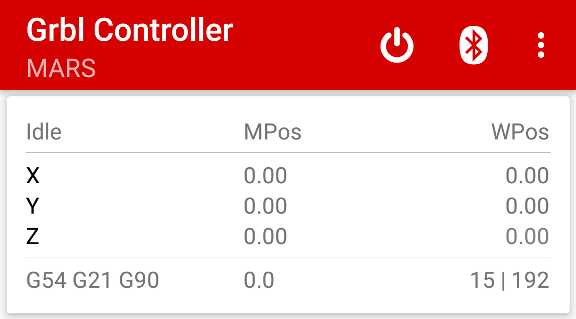

Grbl Controller
compact android mobile application for gcode streaming and controlling a cnc machine with grbl firmware

Features:
- Supports both Bluetooth and USB connections
- GRBL 1.1 real time feed, spindle and rapid overrides support
- Simple and powerful jogging control
- Uses character counting streaming protocol
- Real time machine status reporting
- Probing (G38.3) with auto zero on Z-Axis
- Manual tool change with G43.1
- Four Highly Configurable Custom Buttons
- Application can work in background mode, by utilizing the less resources, there by consuming less power
Requirements
- Bluetooth enabled or USB Otg supported smart phone with android version >= 4.4 (Kit Kat or above)
- GRBL firmware version >= 1.1f
- Bluetooth module like HC-05 or HC-06 or USB Otg cable